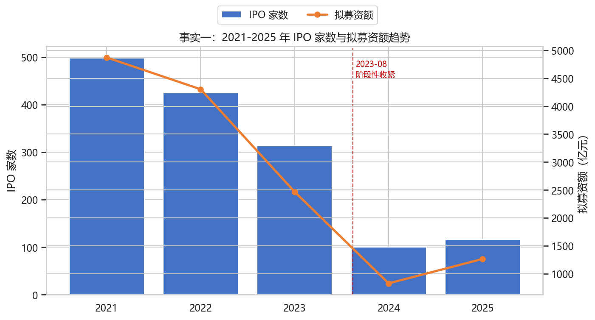
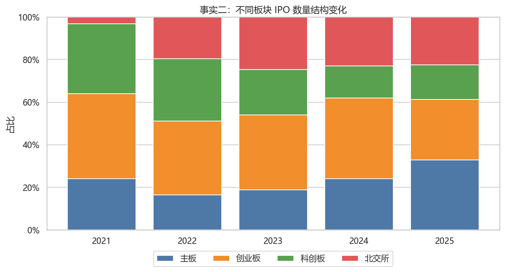
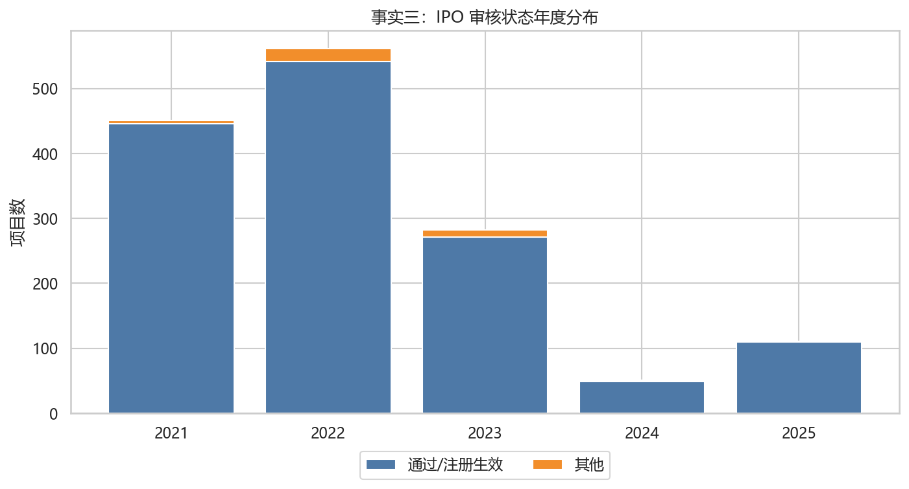
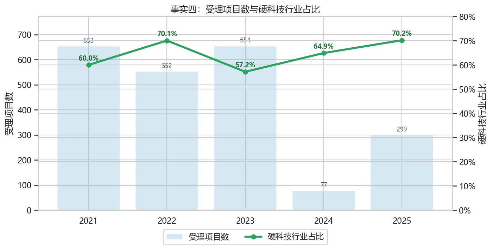
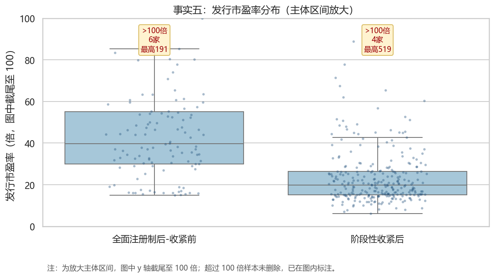

PB 班第 6 组｜Team02-G06
决策主体： 中国证监会发行监管部门
核心问题： 全面注册制及 2023 年 8 月阶段性收紧后，IPO 的发行节奏、板块结构、审核状态和可观察质量代理指标是否发生变化？
| 时间 | 事件 | 对分析的含义 |
|---|---|---|
| 2023-02-17 | 全面实行股票发行注册制制度规则发布 | 注册制扩展至全市场 |
| 2023-08 | 阶段性收紧 IPO 节奏 | 发行监管开始更强调一二级市场平衡 |

样本中 2021-2025 年上市 IPO 共 1452 家。2023 年后年度 IPO 家数和拟募资额整体走低，2024-2025 年更能体现阶段性收紧后的发行节奏变化。

2025 年样本 IPO 板块结构为：主板 32.8%、创业板 28.4%、科创板 16.4%、北交所 22.4%。板块结构变化可用于观察注册制是否更多承接成长型与科技型企业。

审核状态口径显示通过/注册生效和其他状态均可被持续监测；若接口字段更新，应在 Notebook 中保留原始状态并重新归类。

受理项目中硬科技行业占比从 2021 年的 60.0% 变为 2025 年的 70.2%，可作为注册制服务科技创新导向的结构性指标。
